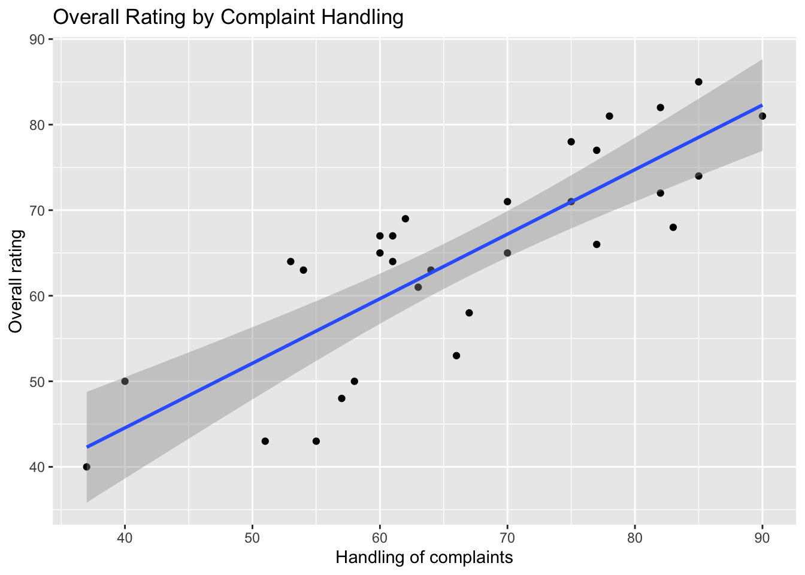
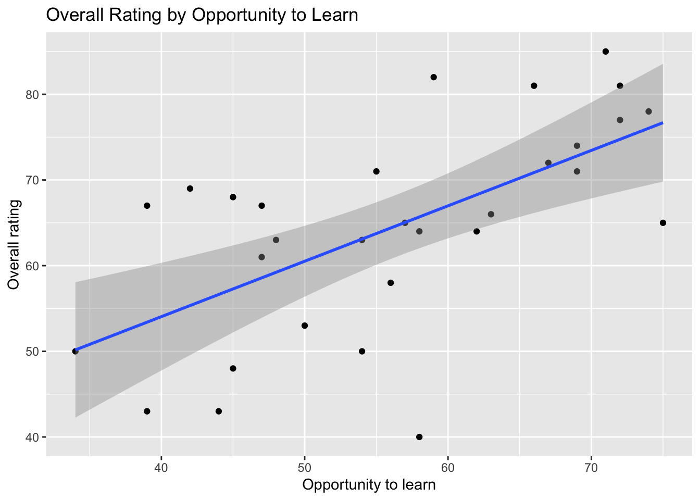
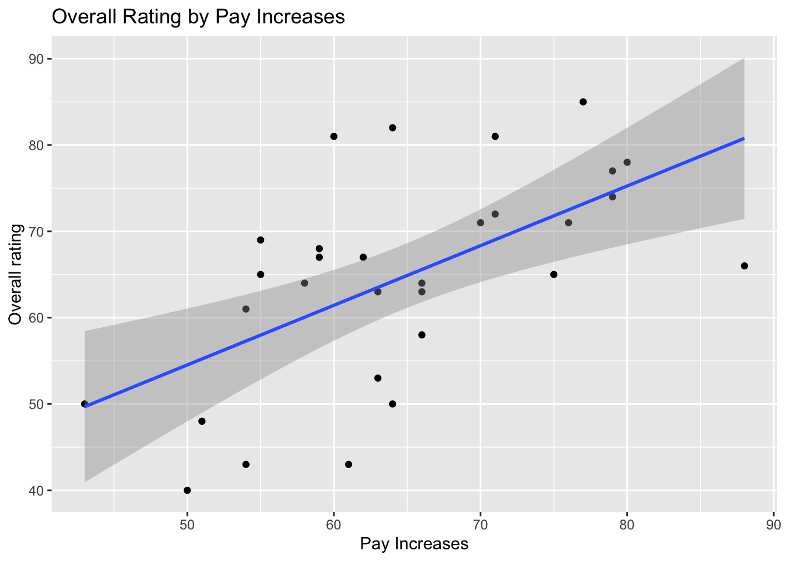
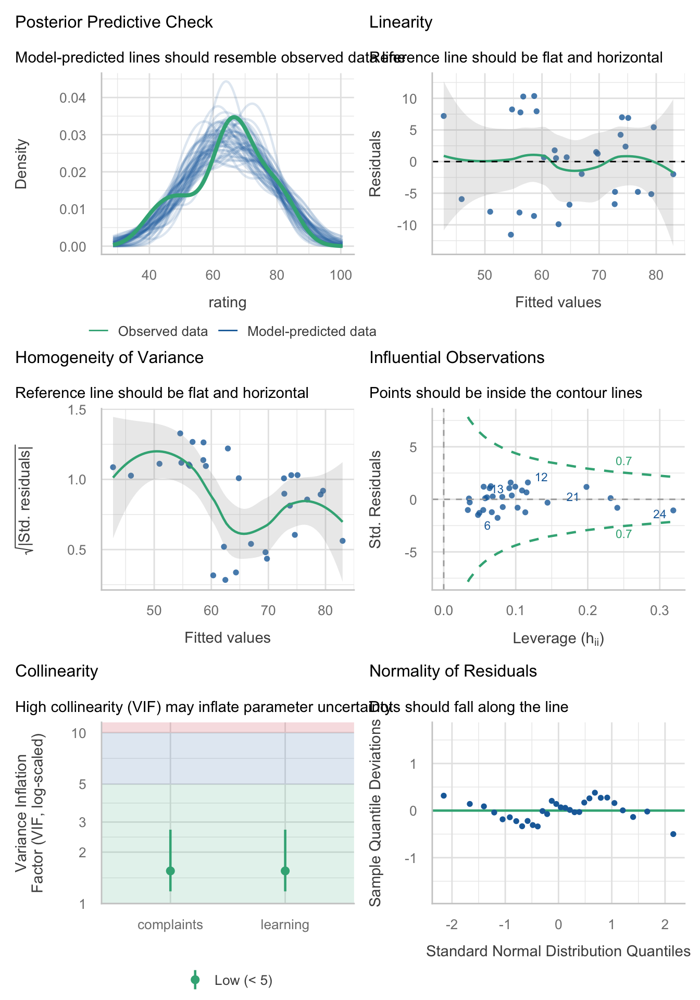

| Descriptive Statistics for Analysis Variables | ||||
| Variable | Mean | SD | Min | Max |
|---|---|---|---|---|
| complaints | 66.60 | 13.31 | 37 | 90 |
| learning | 56.37 | 11.74 | 34 | 75 |
| raises | 64.63 | 10.40 | 43 | 88 |
| rating | 64.63 | 12.17 | 40 | 85 |
9041 Lab 3
Data
Exploratory Analysis




1.4: Exploration of the Data
All three predictors were positively associated with overall workplace ratings, and each relationship appeared approximately linear. Handling of employee complaints showed the strongest association, followed by opportunity to learn and performance-based raises based on the graphs. The raises relationship in particular showed more scatter around the fitted line. No departments appeared to be extreme outliers. With only 30 departments, individual observations may still carry influence, so this is examined further in the regression diagnostics.
These patterns are consistent with expectations: complaint handling reflects how responsive management is to employees, which is something employees are likely to expect regardless of their own performance. Learning opportunities and performance based raises on the other hand can depend on employees’ own effort, so they may shape overall impressions of the workplace less directly.
Model Specification
2.1: Developing my Predictions
I expected the handling of employee complaints to be the strongest predictor of overall workplace ratings, because it reflects how responsive management is to employees’ concerns, an aspect of the workplace that affects all employees regardless of their role or performance. I expected opportunities to learn to explain additional variation beyond complaint handling, since learning captures a distinct aspect of the workplace. However, because departments with responsive management may also tend to offer more learning opportunities, I expected part of the learning effect to overlap with complaint handling, so its unique contribution should be smaller than its association with ratings on its own. Finally, I expected performance-based raises to add relatively little once complaints and learning were accounted for, since they depend partly on employees’ own performance and they might not be strongly connected to quality of management.
2.3: Exploring the fitted models
In M1, the complaints coefficient reflects the overall association between complaint handling and ratings. When learning was added in M2, the coefficient decreased somewhat, because it now reflects complaint handling among departments with similar learning opportunities. This suggests that part of the original association was shared with learning. Adding raises in M3 left the complaints coefficient essentially unchanged, suggesting that raises add little beyond the other two predictors. Throughout, complaint handling remained a strong positive predictor.
Model Comparison
| Comparison of Nested Regression Models | ||||||||
| Model |
Overall Model Performance
|
Incremental Improvement in Fit
|
||||||
|---|---|---|---|---|---|---|---|---|
| r.squared | adj.r.squared | RMSE | Residual df | delta.r.squared | Nested df | Nested F | Nested p | |
| M0: Null | 0.000 | 0.000 | 11.968 | 29 | NA | NA | NA | NA |
| M1: Complaints | 0.681 | 0.670 | 6.756 | 28 | 0.681 | 1 | 60.726 | 0.000 |
| M2: Complaints + Learning | 0.708 | 0.686 | 6.467 | 27 | 0.027 | 1 | 2.380 | 0.135 |
| M3: Expanded | 0.708 | 0.675 | 6.464 | 26 | 0.000 | 1 | 0.025 | 0.876 |
3.5: Interpret the comparisons
M2 and M3 explained the most variation in overall ratings, but almost all of it came from complaint handling. M1 alone explained about 68% of the variation, a large and significant improvement over the null model. Adding learning opportunities explained only about 3% more, and this improvement was not statistically significant. Adding performance-based raises explained virtually nothing further. Adjusted R² rose slightly from M1 to M2 but fell in M3, indicating that raises did not justify the added complexity. Likewise, RMSE dropped substantially from the null model to M1, but the further reductions in M2 and M3 were too small to be meaningful. Overall, complaint handling is the main predictor of workplace ratings, with learning and raises adding little beyond it.
Regression Diagnostics

4.2: Diagnostic Findings
Diagnostic plots for M2 suggested that most assumptions were reasonably satisfied. The residuals showed no curvature and were approximately normal, no department had undue influence, and multicollinearity was low. The main concern was heteroscedasticity: residuals varied more for departments with lower predicted ratings, which may make the standard errors and confidence intervals somewhat inaccurate. Because the coefficient estimates remain unbiased, this does not substantially undermine the model, but the already uncertain effect of learning should be interpreted cautiously.
Preferred Model
5.1: Selecting a model
I selected M2 (complaints and learning) as the preferred model. M3 was ruled out because adding raises explained no additional variation and lowered adjusted R². Although adding learning did not significantly improve on M1, M2 had the highest adjusted R² of all four models. It also estimates the effect of complaint handling while holding learning constant, which makes it more informative. The diagnostics supported this choice, showing low multicollinearity and no influential observations. M2 therefore offers the best balance of fit and simplicity, although the learning coefficient should be interpreted cautiously.
| Coefficients for M2: Predicting Overall Workplace Rating | |||||
| term | estimate | std.error | conf.low | conf.high | p.value |
|---|---|---|---|---|---|
| (Intercept) | 9.8708805 | 7.0612236 | -4.61755361 | 24.3593145 | 1.735231e-01 |
| complaints | 0.6435176 | 0.1184774 | 0.40042203 | 0.8866132 | 9.573795e-06 |
| learning | 0.2111918 | 0.1344037 | -0.06458185 | 0.4869655 | 1.277539e-01 |
5.3 Interpreting Coefficients
Both predictors were positively associated with overall workplace ratings. Holding learning opportunities constant, a one-percentage-point increase in favourable responses about complaint handling was associated with a 0.64-point increase in a department’s overall rating (95% CI [0.4, 0.89]). This interval lies entirely above zero, so complaint handling has a clearly positive association with ratings. Holding complaint handling constant, a one-percentage-point increase in favourable responses about learning opportunities was associated with a 0.21-point increase in overall rating (95% CI [-0.06, 0.49]). However, this interval includes zero, so the data are consistent with learning having a small positive association, no association, or even a slight negative one. Its unique contribution beyond complaint handling therefore remains uncertain.
5.4 Summarizing model performance
The selected model explained 70.8% of the variation in overall workplace ratings across departments (adjusted R² = 0.69). This means complaint handling and learning opportunities together account for most of the differences in how departments rate their workplace. Adjusted R² is only slightly lower than R², indicating that the fit is not inflated by unnecessary predictors. The RMSE of 6.47 means the model’s predicted ratings typically differ from departments’ actual ratings by about this many points. Given that ratings ranged from 40 to 85, this is a moderate level of error: the model captures the main pattern well, but it cannot predict any single department’s rating precisely.
Discussion
Part 6- Findings and Limitations
These results suggest that complaint handling is by far the most important predictor of overall workplace ratings, explaining most of the variation regardless of which other predictors were included. Learning opportunities may play a smaller role, but their unique contribution was uncertain, and performance-based raises added nothing beyond the other two. Overall, how responsive management is to employees appears to matter more than opportunities for growth or reward.
These conclusions are limited by the small sample of 30 departments, which may have been too small to detect weaker effects such as learning. Because the data are department-level averages, the findings may not apply to individual employees, and because they are observational, the associations cannot be interpreted as causal. Finally, the unequal residual variance found in the diagnostics may make the confidence intervals somewhat inaccurate.